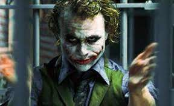
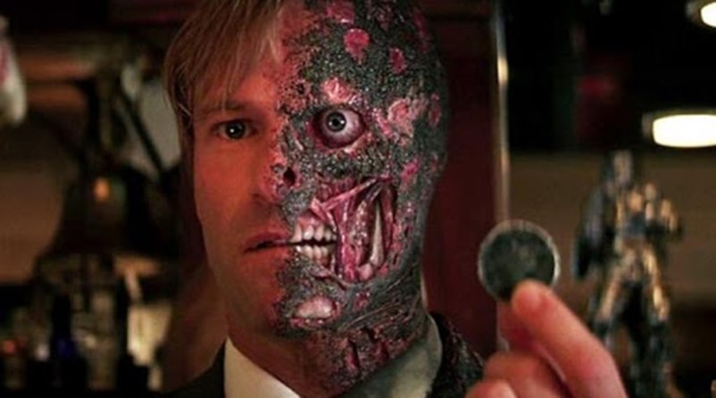

Coringa-777
O filme é muito chato. sem emoção, ação encenada e lenta. temos um Batman, gótico porém apático, cheio de dúvidas e sem o raciocínio acima do normal que sabemos que ele tem quando volta a gotham.
Mulher-maravilha
Robert Pattinson encarna um Batman diferente de qualquer Batman anterior. Sombrio, violento e sequelado até como Bruce Wayne. Um filme longo, mas nada cansativo e a proposta de apresentar as habilidades investigativas do personagem muito bem executadas.

Duas-caras
Foi o pior filme do batman que eu já vi, esperava muito mais. Filme muito melancólico, história inicial sem muito sentindo, ator não desempenhou muito bem o papel.